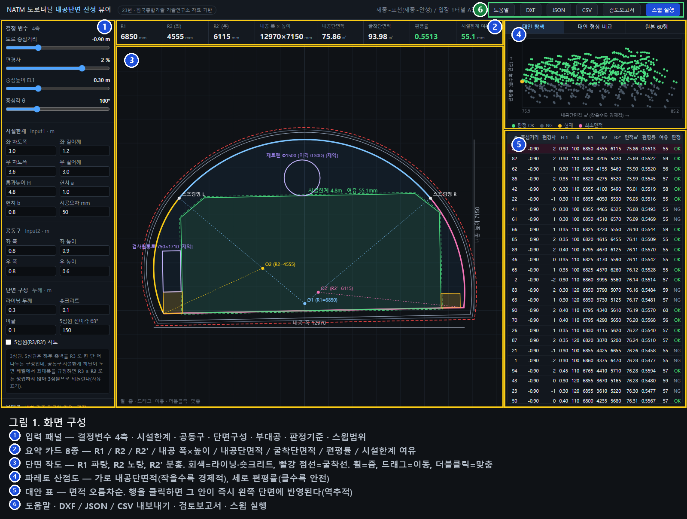
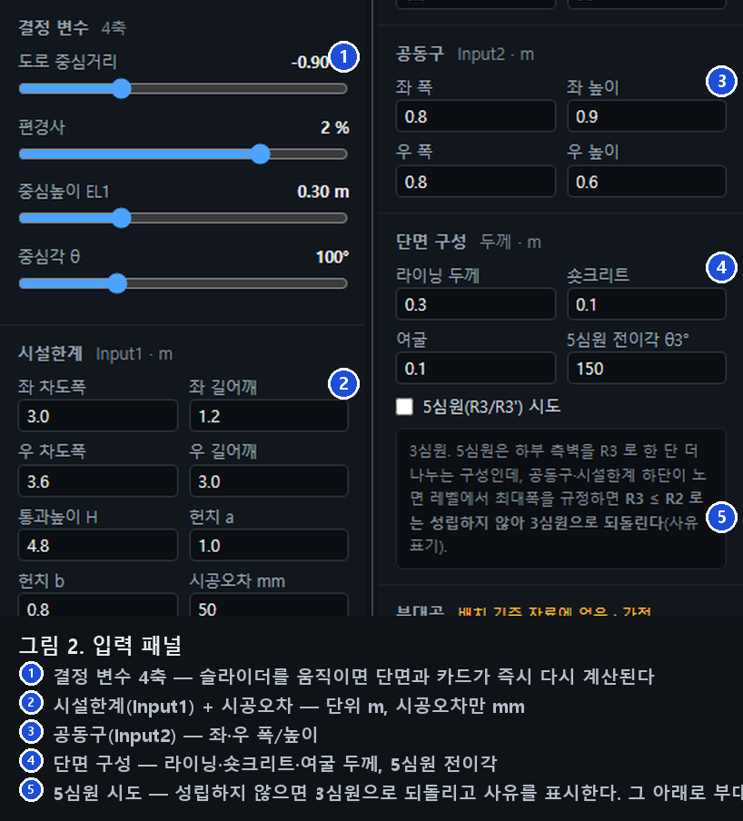
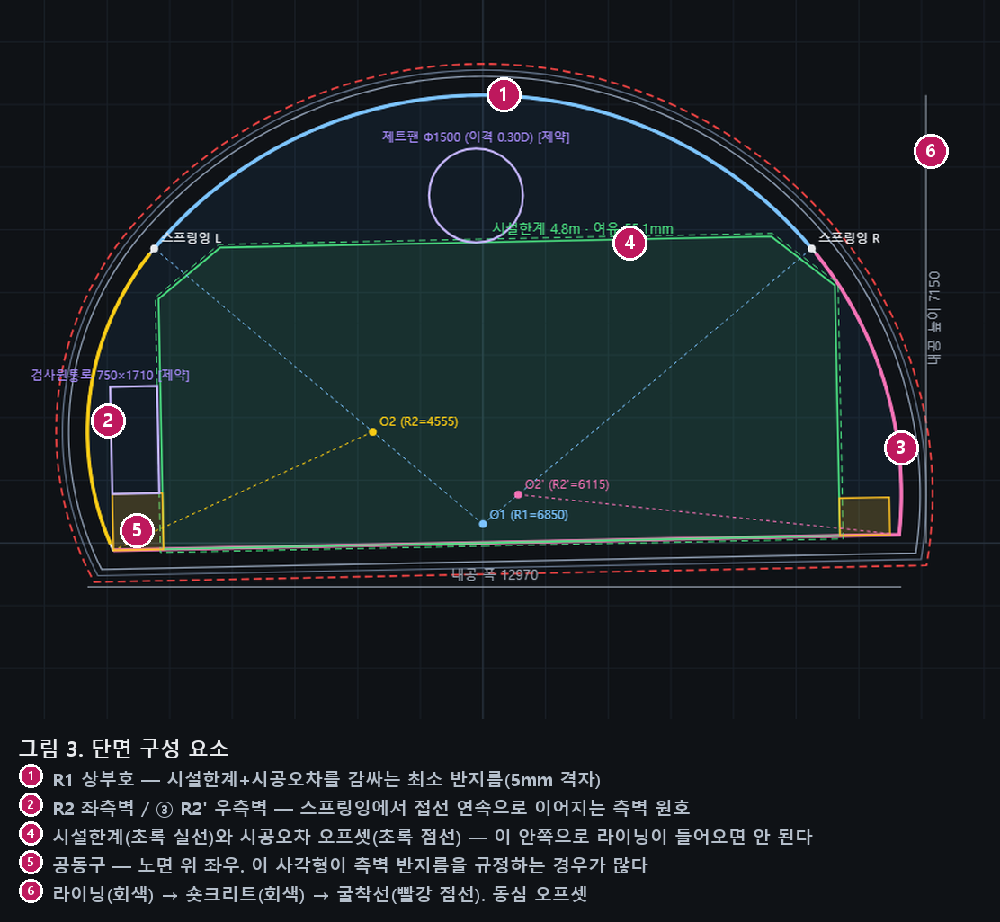
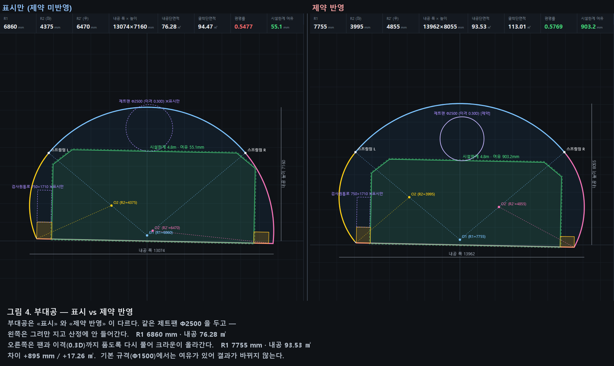
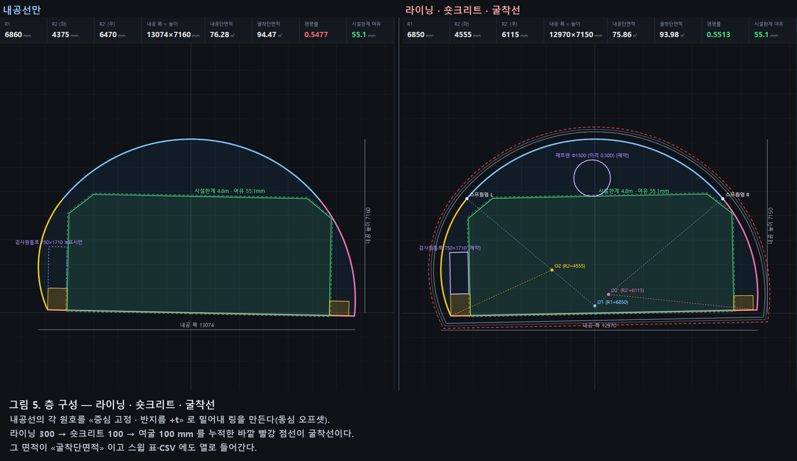
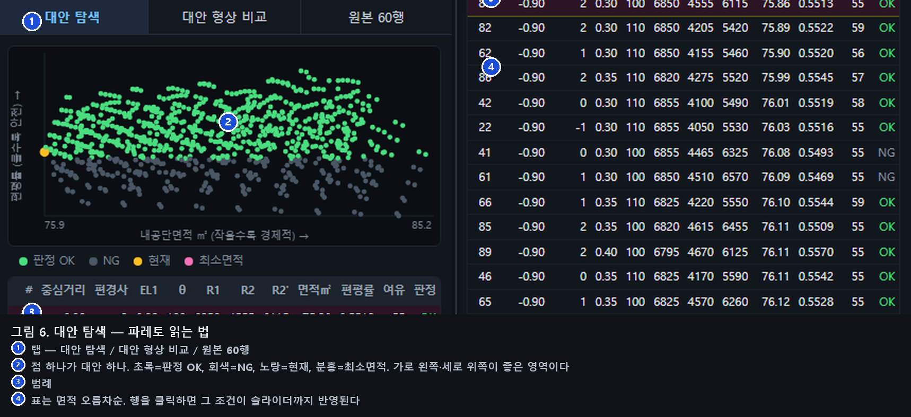
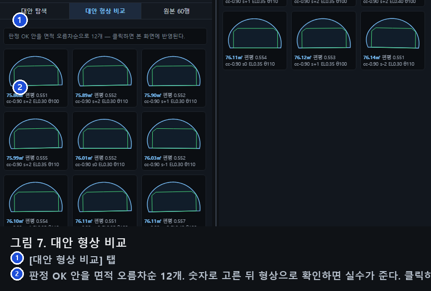
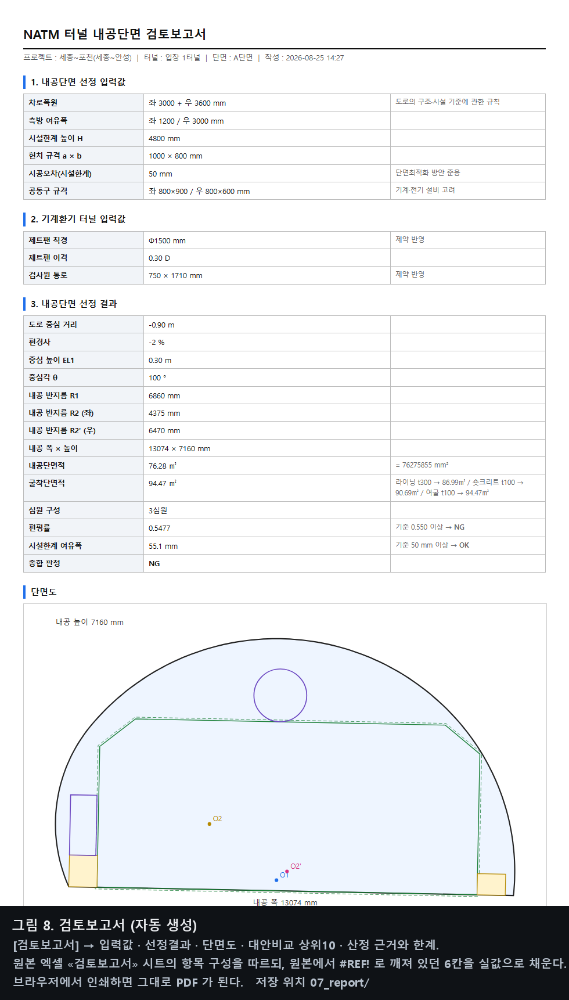
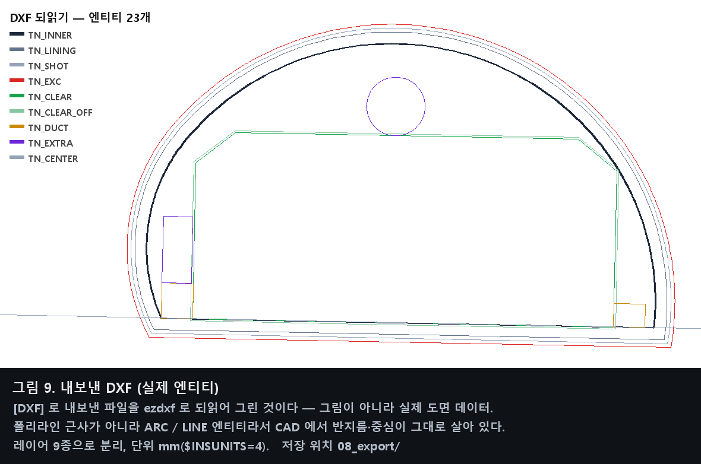
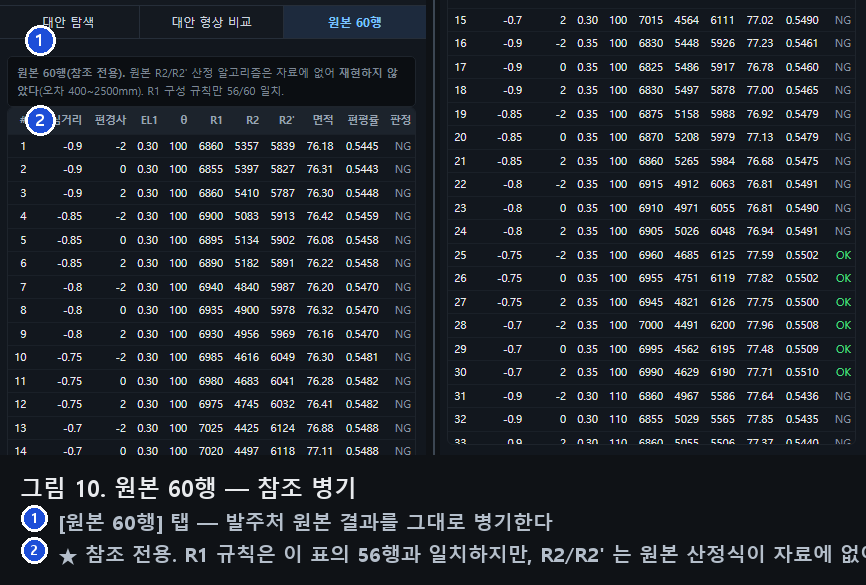

설계 조건을 넣으면 NATM 도로터널의 3심원 내공단면을 그 자리에서 그려 보이고, 조건을 바꿔가며 만든 대안들을 비교·판정해 하나를 고르게 해 주는 도구입니다. 고른 안은 도면(DXF)·계약(JSON)·표(CSV)·검토보고서로 바로 뽑힙니다.
RUN.bat 더블클릭. 브라우저가 자동으로 열립니다. 창을 닫으면 종료됩니다.runtime\ 이 있는 것)이면 설치할 것이 전혀 없습니다.
관리자 권한도 필요 없고, PC 에 이미 깔린 파이썬과 충돌하지도 않습니다.Add python.exe to PATH 체크).CHECK.bat 더블클릭. 파이썬·필수파일·엔진 계산·포트·쓰기권한을 검사해
화면과 CHECK_RESULT.txt 에 남깁니다. [FAIL] 줄이 있으면 그 파일을 그대로 보내 주시면 됩니다.


| 요소 | 화면 표시 | 의미 |
|---|---|---|
| 시설한계 | 초록 실선 | 차량이 지나가야 하는 공간. 이 안으로 구조물이 들어오면 안 됩니다. |
| 시공오차 오프셋 | 초록 점선 | 시설한계를 시공오차만큼 바깥으로 벌린 선. R1 은 이 선을 감싸도록 잡습니다. |
| 내공선 | 파랑·노랑·분홍 | 3심원 라이닝 안쪽 면. R1(상부) + R2/R2′(좌우 측벽). |
| O1 / O2 / O2′ | 점 + 라벨 | 각 원호의 중심. O1 은 터널 중심축 위 EL1 높이에 있습니다. |
| 스프링잉 L / R | 흰 점 | 상부호가 끝나고 측벽호로 넘어가는 접점. 중심각 θ 의 절반 위치입니다. |
| 공동구 | 주황 사각형 | 노면 위 좌·우. 라이닝 안쪽에 들어와야 합니다. |
| 부대공 | 보라 실선/점선 | 검사원통로·제트팬. 실선 = 제약 반영, 점선 = 표시만. |
| 라이닝·숏크리트 | 회색 실선 | 내공선을 동심으로 밀어낸 면. |
| 굴착선 | 빨강 점선 | 여굴까지 포함한 최외곽. 이 면적이 굴착단면적입니다. |
| 항목 | 단위 | 의미 | 키우면 |
|---|---|---|---|
| 도로 중심거리 | m | 터널 중심에서 도로 중심까지. 음수 = 도로가 왼쪽 | 단면이 한쪽으로 쏠려 좌우 측벽 반지름이 갈립니다 |
| 편경사 | % | 노면 기울기. 도로·시설한계·공동구가 함께 기웁니다(라이닝은 연직 유지) | 한쪽 어깨가 올라가 R1 요구가 커집니다 |
| 중심높이 EL1 | m | R1 원 중심의 높이(노면 기준) | 중심이 올라가 상부호가 납작해지고 편평률이 커집니다 |
| 중심각 θ | ° | 상부호가 차지하는 중심각 | 스프링잉이 내려가 측벽 원호가 짧아집니다 |
| 묶음 | 항목 | 기본값 | 비고 |
|---|---|---|---|
| 시설한계 | 좌/우 차도폭 | 3.0 / 3.6 m | 「도로의 구조·시설 기준에 관한 규칙」 계열 |
| 좌/우 길어깨 | 1.2 / 3.0 m | ||
| 통과높이 H | 4.8 m | ||
| 헌치 a / b | 1.0 / 0.8 m | ||
| 시공오차 | 시설한계 오프셋 | 50 mm | R1 산정의 여유. 검토보고서 기준값 |
| 공동구 | 좌 폭 × 높이 | 0.8 × 0.9 m | 기계·전기 설비 고려 |
| 우 폭 × 높이 | 0.8 × 0.6 m | ||
| 단면 구성 | 라이닝 두께 | 0.3 m | 동심 오프셋. 누적해서 굴착선까지 |
| 숏크리트 | 0.1 m | ||
| 여굴 | 0.1 m | ||
| 부대공 | 검사원통로 | 0.75 × 1.71 m | 배치는 가정값. 표시/제약을 따로 켭니다 |
| 제트팬 Φ · 이격 | 1.5 m · 0.3D |

내공선의 각 원호를 중심은 그대로 두고 반지름만 키워 링을 만듭니다(동심 오프셋). 접선 연속이 그대로 유지됩니다.

| 항목 | 기본값 | 의미 |
|---|---|---|
| 편평률 하한 | 0.55 | 내공높이 ÷ 내공폭. 클수록 형상이 안정적(안전성 지표) |
| 여유폭 하한 | 50 mm | 시설한계에서 라이닝까지의 최소 반경 여유 |


| 버튼 | 내용 | 저장 위치 |
|---|---|---|
| DXF | 실제 ARC/LINE 엔티티(폴리라인 근사가 아님). 레이어 9종으로 분리, 단위 mm. 내공선·라이닝·숏크리트·굴착선·시설한계·공동구·부대공·중심점 | 08_export/ |
| JSON | 계약 tn_section/1.0. 중심·반지름·각도·끝점. 이 한 파일이면 단면을 그대로 재구성할 수 있습니다 | 08_export/ |
| CSV | 스윕 결과 전체(굴착단면적 포함). 엑셀에서 바로 열립니다 | 08_export/ |
| 검토보고서 | 입력값 · 선정결과 · 단면도 · 대안비교 상위10 · 산정 근거와 한계. HTML 이라 브라우저에서 인쇄하면 PDF 가 됩니다 | 07_report/ |
RUN.bat 이 폴더 안 runtime\python.exe 를 먼저 씁니다.

| 용어 | 뜻 |
|---|---|
| 시설한계 | 차량·화물이 지나가는 데 반드시 비워 둬야 하는 공간의 경계 |
| 내공 | 터널 라이닝 안쪽의 빈 공간. 내공단면적 = 그 면적 |
| 3심원 | 중심이 셋인 아치. 상부 R1 + 좌우 측벽 R2/R2′. 각 원호는 접점에서 접선이 이어집니다 |
| 스프링잉 | 상부호와 측벽호가 만나는 접점 |
| 편평률 | 내공높이 ÷ 내공폭. 납작할수록 작아집니다 |
| 편경사 | 배수·주행을 위한 노면 횡단 기울기(%) |
| 공동구 | 전기·통신 설비를 넣는 측면 함체 |
| 여굴 | 굴착 시 계획선보다 더 파이는 여유 |

| 증상 | 확인 |
|---|---|
| 창이 떴다 바로 닫힌다 | CHECK.bat 실행 → CHECK_RESULT.txt 의 [FAIL] 줄 확인 |
| "Python 3 was not found" | 파이썬 3.8+ 설치(설치 시 PATH 체크). 또는 runtime\python.exe 로 포터블 파이썬 배치 |
| 브라우저가 안 열린다 | 검은 창에 찍힌 주소(http://localhost:8801/ 등)를 직접 입력 |
| "Python 3 was not found" | 파이썬 동봉판을 받아 쓰면 설치가 필요 없습니다. 회사 PC 정책상 실행파일 반입이 막히면 파이썬을 설치하고 경량판을 쓰면 됩니다(기능 동일) |
| 화면이 비어 있다 | 브라우저 강력 새로고침(Ctrl+F5). 인터넷 익스플로러는 지원하지 않음 |
| 스윕이 오래 걸린다 | 스윕 범위의 조합 수를 줄입니다(간격을 키우면 조합이 급감) |
| 결과가 이상하다 | python 04_engine/gate_check.py 로 게이트 9종 전수 검사(스윕 900조합) |
배포판 v1.0 · 2026-08-25 · 기술 상세는 AI_GUIDE.md / docs/CODE_MAP.md / docs/API.md